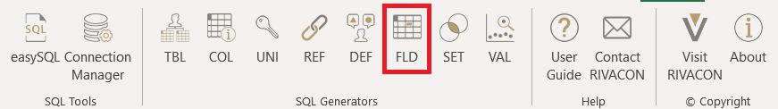
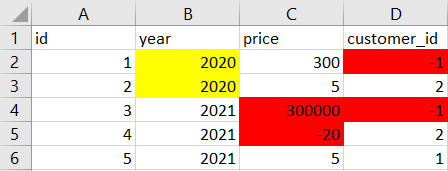
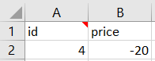
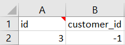
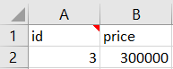
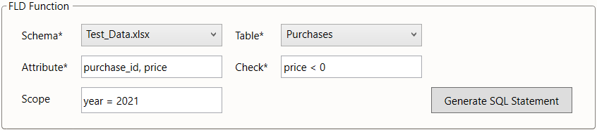
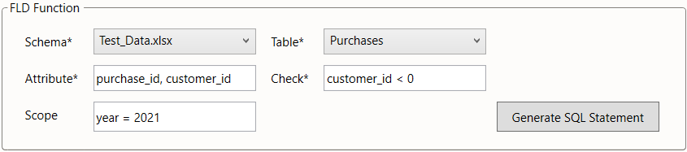

FLD
It is common for attributes to only allow a limited range of values.
The FLD generator can be used to detect invalid or suspicious values, that violate these rules or conventions.
It may be used directly as a worksheet function =FLD().
Rather than doing this, we suggest using the FLD dialog from the menu bar, especially when using this function for the first time.

Figure 1: location of the FLD ribbon
Example
Consider the database of a retailer with two entities: purchases and customers.
An attribute of each purchase is the id of the customer who carried it out.
We will look at three types of entries, that we can find with FLD:
- Impossible values: values, that violate strict rules for attributes. Our retailer can only sell items for positive prices. The below example illustrates this violation by a negative value for the attribute PRICE.
- Convention violation: usually only positive values are used as id in tables. In the below example, a negative customer_id is referenced.
- Unusual values: suppose our retailer only sells inexpensive items and purchases are always worth under 100. However, one entry in the below example is a mistake.

Table 1: purchases
We may perform checks for an entire table or a defined subset thereof.
For instance, in the above example, we may only care about purchases made in 2021.
The framework can account for that via the scope parameter and limit the search for violations to that scope.
|  |  |  |
|---|---|---|
| Table 2: FLD check for prices < 0 | Table 3: FLD check for customer_id < 0 | Table 4: FLD check for prices > 100 |
Settings
The FLD generator has five input parameters, two related to the selection of the table and three to specify the FLD command. The table is defined via:
- the
schema(providing for databases where identically named tables may exist in different schemas) - the
table
The third parameter specifies which attributes should be shown in the output table:
- the
attribute(multiple attributes can be used)
Defining the FLD operation is done with the remaining two parameters
- the
checkis a statement in SQL syntax to filter the table entries for - the
scopedefines the subset of the table to be included in the check
The scope is an optional parameter.
When left blank, the entire table will be checked.
In the below screenshots, we illustrate how the parameters would be chosen to implement the example checks described above.
We assume, that the data is stored in an Excel workbook "Test_Data.xlsx" with purchases stored in the worksheet "Purchases".
In Figure 1 we check for negative prices, which we call impossible.
Figure 2 shows the FLD settings to check for convention violation by negative customer_id.
 Figure 2: FLD settings to perform check on price
 Figure 3: FLD settings to perform check on price